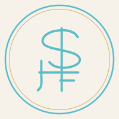
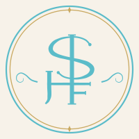
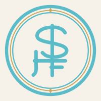
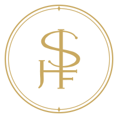
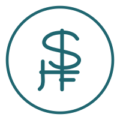

Three readings of the founder's pen sketch. Each is an S, H and F monogram in a ring. The H and F share one horizontal, which serves as the H's crossbar and the F's top arm, and a single long vertical runs down through the S and doubles as the H's right stem and the F's stem. That vertical is what gives the mark its dollar sign read.
Restrained and geometric. One uniform weight.

Filigreed and romantic. High contrast, ball terminals, vines.

Heavier and crest like. Banded ring, built for thread.



Left and centre are the full mark in a single colour.
Right is emblem-1c.svg, the version drawn for thread: no hairlines, no gold
sliver, one flat colour. That is the file the embroiderer gets.
| Direction | Verdict |
|---|---|
| A. Linea | Alternate. The most robust small, but it gives up the contrast that makes the mark feel like a house rather than a startup. |
| B. Fleur | Chosen. Elegant, feminine, and still strong. High contrast reads as couture rather than corporate. |
| C. Crest | Alternate. Best on thread and metal. Too heavy for the page. |